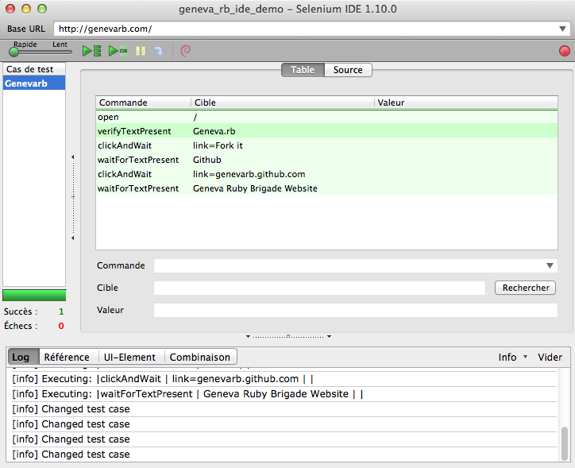

Selenium & Ruby
The basics
Talk by Thibault Béné / @twib0
What is Selenium ?
It's a tool to build automatic tests for your website
But tests at the browser level
To be closer to the real user experience
Exercises your JavaScript
You can even tests your site in any browser (including Android and iOS!)
Selenium’s Tool Suite
Selenium is composed of multiple software tools. Each has a specific role.
- Selenium 1 (aka. Selenium RC or Remote Control)
- Was the main selenium project, still supported.
- Selenium 2 (aka. Selenium Webdriver)
- It's a new version including a more cohesive and object oriented API.
- Selenium IDE
- Firefox plugin with UI.Only intended as a prototyping tool.
- Selenium-Grid
- Part of the Webdriver, used to scale for large test suites and for test suites in multiple environments.
Quick Selenium IDE Overview
Just to show you quickly what that can do.
With basic code for basic actions
Cool?
It's easy, non-coders can easily create tests.
That record your actions in the browser.
And replay them.
BUT !
Tests are unreliable.
It's using a built-in langage. Eurk.
You have to use built-in methods, you can't create your own. Eurk!
You don't have any access with the db, you have to create all objects you need. Eurk!!
Selenium Ruby Webdriver
Selenium is pretty easy to configure for a RoR App.
You just need to add the gem into your gemfile
group :selenium do
gem 'selenium-webdriver', '2.30.0'
end
Create a helper to setup all your preferences, and setup a Selenium DB
def driver
@driver ||= Selenium::WebDriver.for :firefox, :profile => set_profile
end
def wait
@wait ||= Selenium::WebDriver::Wait.new(:timeout => 10)
end
You are done ! Then let's code !
Using Factories
I'm able to create all the objects I need directly to the DB
Example : Creating a track, and all the objects that a track need to exists
factory :track do
association :project
artist 'Chab'
title 'Foo'
deleted_at nil
uploaded_file { File.new('test/fixtures/mp3s/sample.mp3') }
nature { Track::Natures::ORIGINAL }
isrc nil
after(:build) { |t| t.uploaded_file.stubs(:original_filename => 'uploaded_original_filename') }
end
To build robust tests
With this track factory I'm able to create a test without creating a user, a project ...
def test_password_protection
track = FactoryGirl.create(:track)
track_picture_url_medium = 'http:' + track.picture.url(size = 'medium')
track_pwd = '123456'
login(track.project.creator)
click_on_edit
switch_to_restricted_with_password(track_pwd)
click_on_promopages
check_password_protected_page(track_pwd, track, track_picture_url_medium)
cant_click_player_share_panel_button
end
Cool?
It's easy to write, with your own methods.
In case of errors, you can debug easily using the backtrace or even logs.
You can handle high level event, such as drag and drop, ajax requests ...
Even Cooler !
You can integrate test suites with Jenkins or Travis.
You can setup as many drivers you want to test multiple browsers.
BUT !
Be careful, selenium is a high consumer of computer resources, and his performances are linked to your hardware.
Always make Selenium waits for elements to load before running a task on them.
As selenium is testing complex scenarios, running the whole test suite can be long.
CONCLUSION
Selenium is a great tool that integrates well as the final step of a development workflow.
Tests are very focused on specific user interactions so that when a test fails, some aspect of the user experience is broken.
With the Selenium backtrace, a developer console and some QA magic, we can quickly find the source of the bug and fix it before the feature goes live.